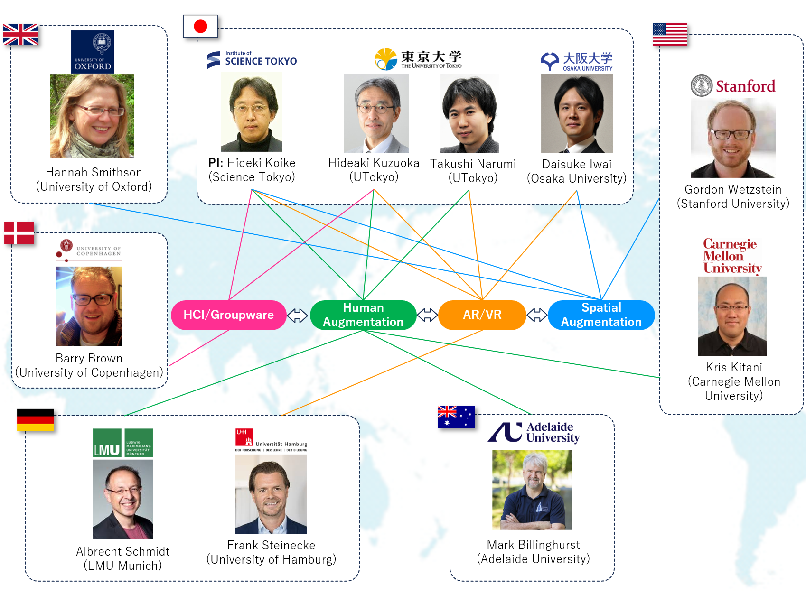

JST ASPIRE · Grant No. JPMJAP2404
Establishment of an International Collaborative Research Network on Human and Spatial Augmentation
Adopting Sustainable Partnerships for Innovative Research Ecosystem
JST ASPIRE · Grant No. JPMJAP2404
Adopting Sustainable Partnerships for Innovative Research Ecosystem
The JST ASPIRE project brings together leading researchers from Japan and abroad to build a sustainable international collaborative research network focused on Human and Spatial Augmentation. Funded by the Japan Science and Technology Agency (JST), we aim to advance research in virtual/augmented reality, human-computer interaction, and spatial computing through joint workshops, lab exchanges, and collaborative publications.

To be updated.